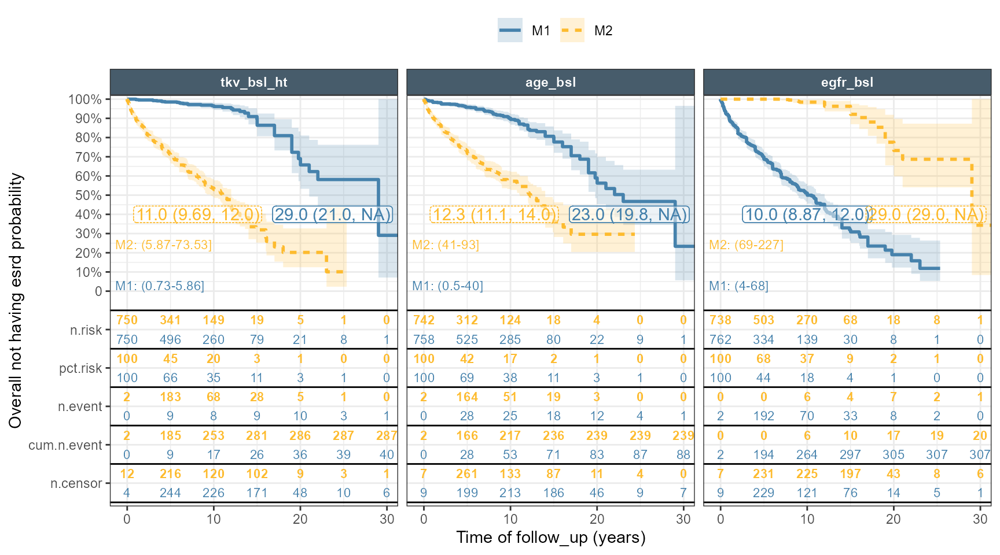
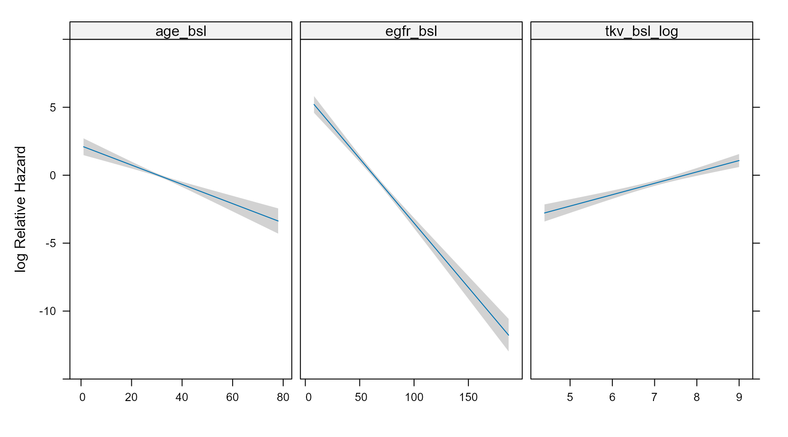
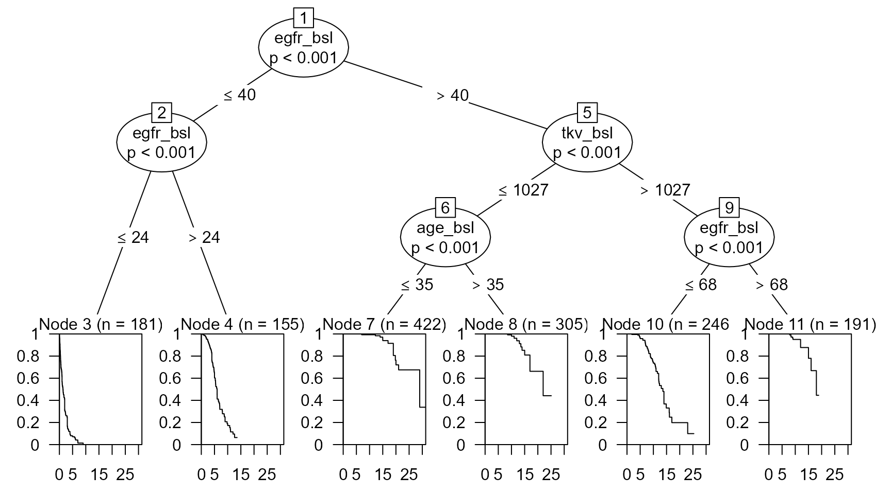

I will be using simulated data that mimic the original which will allow me to illustrate the modeling and visualization techniques used for this analysis.
Autosomal dominant polycystic kidney disease is the most common hereditary kidney disease. A promising imaging biomarker measuring the kidney volume was being evaluated for tracking and predicting the natural history of the disease. While the original data had many clinical covariates I will be only using the ones that were found to be important which were the baseline total kidney volume (tkv_bsl), the age (age_bsl) and the glomerular filtration rate (egfr_bsl). As usual we want to look at the data first!
Kaplan-Meier plot of key covariate split by Median: M1 (Below Median) M2 (Above Median)
Code
esrdplot <- esrd ggkmrisktable(data = esrdplot, time="time", status ="status",exposure_metrics =c("tkv_bsl_ht","age_bsl","egfr_bsl"),exposure_metric_split ="median",xlab ="Time of follow_up (years)",ylab ="Overall not having esrd probability",exposure_metric_soc_value =-9999,exposure_metric_plac_value =-99,nrisk_table_textsize =3,km_median ="medianci",km_ticks =FALSE,show_exptile_values =TRUE,show_exptile_values_pos ="left",show_exptile_values_textsize =3,nrisk_table_breaktimeby =5,return_list =FALSE )+facet_wrap2(~expname,ncol =3,strip =strip_nested())+scale_x_continuous(expand =expansion(mult=c(0,0),add=c(2,0)),)

The plot clearly shows that all these covariates are important and when splitting by median we see a clear separation between the curves. These variables are not independent and to assess whether the effects of tkv_bsl and age_bsl depend on egfr_bsl, I first split the egfr_bsl into egfr_bsl_cat: below/above median categories and redo the plot coloring by egfr category.
This shows that the curves criss-cross depending on which combination of values we have and in statistical terms this illustrate “interactions” between the various covariates. This was formally tested during modeling using likelihood ratio tests for the main and interaction terms the selected model included two-way interactions between baseline egfr and age and between baseline log of total kidney volume and age:
The complete model building steps and evaluation using cross-validation are included in the FDA review and will be skipped here. Now that we have a final model we want to understand the meaning of these interactions and how they interplay to have an effect on the hazard ratios. The rms package has nice automated utilities to automatically generate forest plots of hazard ratios the default produce hazard ratios between the 75th to the 25th percentiles keeping the other covariates at the reference value. In the repo I include this file compute_HR_deltamethod.r which uses the delta method and allow the user to fully specify the set of covariates between the test and reference and unlike rms::summary the user can modify more than one covariate at a time. I first validate that the code reproduces rms then I compute the Hazard ratio and associated 95%CI for reference values of egfr = 50 ml/min , total kidney volume of 1 L, age of 40 years to test values of egfr = 45 ml/min , total kidney volume of 1.2 L, age of 42 years:
And now I can use computerelativeHR to compute the HR for any set of ref to test values and this what powered the paper R Shiny app: Online Interactive Hazard Ratio Calculator
Another nice rms feature is automated Predict that can plot the log relative hazard ratio versus each predictor keeping the others at reference values:
Code
plot(Predict(fitSURVfinal))

Alternatively the user can specify a “grid” of values and produce a customized plot using lattice or ggplot2:
The code below constructs a grid of values, predict the Hazard Ratios taking into account interactions and use the deltamethod to compute the associated 95% CI:
These plots are close enough, I modified the range of covariate predictions to keep it within most common values. I also provide a new plot showing hazard ratios (log scale) versus covariate and since log of total kidney volume was used as a covariate plotting against total kidney volume show an exponential saturating shape. Instead of densities I use boxplots which one do you prefer?
At the end I wanted to try another modeling strategy from the partykit package:
Conditional Inference Trees: ctree
Conditional Random Forests: cforest
These methods automatically detect interactions and splits and it is pretty interesting !
Code
library(survival)library(partykit)set.seed(165461)simple_tree <-ctree(Surv(time, status) ~ egfr_bsl+tkv_bsl+ age_bsl, data = esrd,control =ctree_control(alpha =0.01, # Stricter significance (default 0.05)maxdepth =3, # Limits the tree to 3 levels deepminsplit =50, # Must have 50 obs to try a splitminbucket =20# Each leaf must have at least 20 obs ))plot(simple_tree)

Code
surv_forest <-cforest(Surv(time, status) ~ egfr_bsl+tkv_bsl+ age_bsl, data = esrd,ntree =500,control =ctree_control(teststat ="quad",testtype ="Univ",alpha =0.01, # Stricter significance (default 0.05)maxdepth =3, # Limits the tree to 3 levels deepminsplit =50, # Must have 50 obs to try a splitminbucket =20# Each leaf must have at least 20 obs ))plot(gettree(surv_forest))